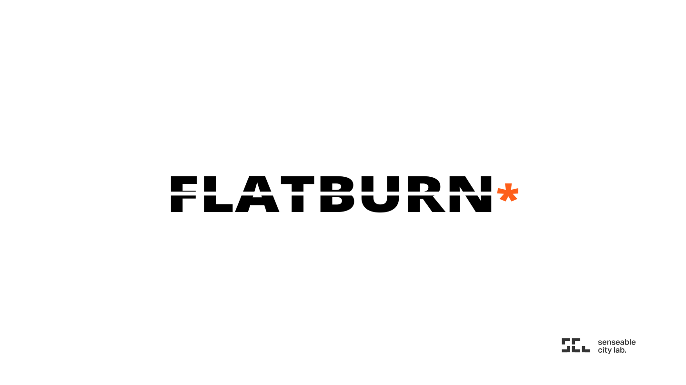
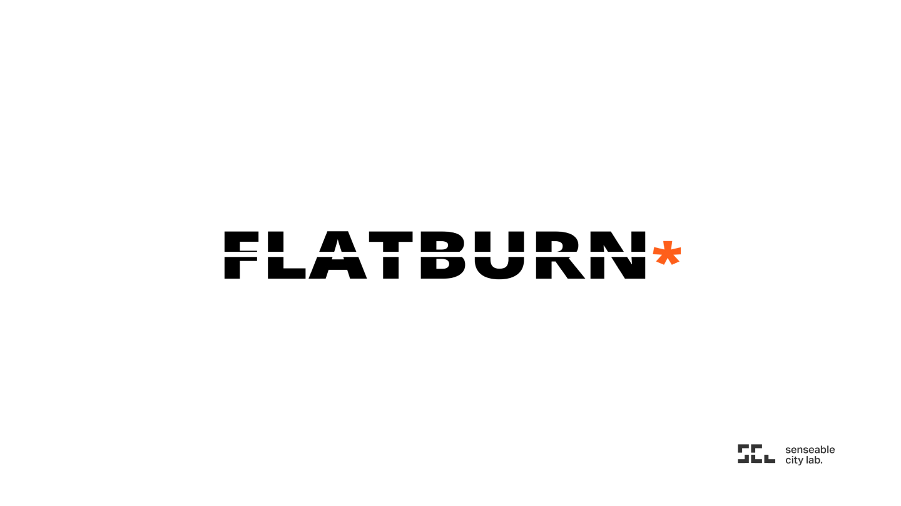
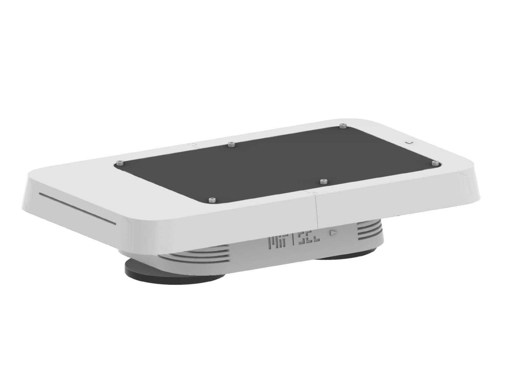

We empower communities around the world
to monitor their environment.
 

Part of the
The
The
The
Build your own Flatburn.
Help your community
monitor its environment.

Build
3D Files
Handbook
Checklist
Explore
Datasets
Data collection document
Learn
Coding Exercise
Facilitator Handbook